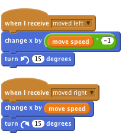

These projects are for use inside the UK only. All Code Clubs must be registered. You can check registered clubs at www.codeclub.org.uk/registered-clubs. This coursework is developed in the open on GitHub, github.com/CodeClub/ come and join us!
Activity Checklist
To make a wheel appear to move, we want to rotate it by a small amount and move it by a small amount when we receive a movement broadcast.

If you wanted, you could replace the values with variables like move speed, so you could control the speed in all directions from one place.
(Notice how we have to multiply moveSpeed by -1 to get the negative value?)
These projects are for use inside the UK only. All Code Clubs must be registered. You can check registered clubs at www.codeclub.org.uk/registered-clubs. This coursework is developed in the open on GitHub, github.com/CodeClub/ come and join us!